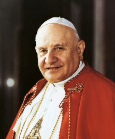
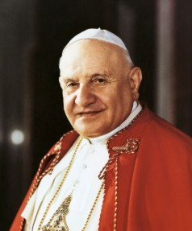

Cultural references and linguistic notes in the poems
To fully grasp the content of Pedrini's poetry, it is important to note some cultural references and some interesting expressions that are present in the texts.
I - CANTADE
Note 1 The back of a hill Pedrini is referencing is not a single relief, but the seven hills (colli in Italian) on which the historical part of the city (Sità Ólta, or Città Alta in Italian) was built: Colle di Gromo, Colle di San Salvatore, Colle Aperto, Colle di Rosate, Colle di S. Eufemia, Colle di San Michele al Pozzo Bianco, Colle di San Giovanni.
Reference:visitbergamo.net
Reference:visitbergamo.net
Note 2 The town square is Piassa Ègia (Piazza Vecchia in Italian, ie. Old Square), the main square of the historical part of the city.
Originally a Roman forum, the square was renovated in the XV century, when all the current buildings were designed and the square was connected to piazza Duomo, making the area the most important monumental centre of Bergamo.

Image from Wikipedia
Originally a Roman forum, the square was renovated in the XV century, when all the current buildings were designed and the square was connected to piazza Duomo, making the area the most important monumental centre of Bergamo.
Image from Wikipedia
Note 3 The walls of Sità Ólta were erected by the Republic of Venice in the XVI century and have become a UNESCO-listed treasure in 2017.
Footage of the fortress walls
Footage of the fortress walls
Note 4 Sità Bassa refers to the lower, more recent part of the city of Bergamo. It originated from the development of 8 boroughs: Borgo Canale, Borgo Sant'Alessandro, Borgo San Leonardo, Borgo Pignolo, Borgo San Tomaso, Borgo Santa Caterina, Borgo Sant'Antonio e Borgo Palazzo.

Porta Nuova, the central parte of the lower city (image from visitbergamo.net
Porta Nuova, the central parte of the lower city (image from visitbergamo.net
Note 5ü soch che 'l a düsit röscàla is an idiomatic expression. Sòch means "tree stump", while rösca can be translated into "peel/bark".
The verse is a metaphor that refers to the proverbial hard-wroking nature of the people from Bergamo.
The verse is a metaphor that refers to the proverbial hard-wroking nature of the people from Bergamo.
Note 6 The spelling l' would not be considered standard by scholars (see Sanga, 1984): since the complete word would be al the apostrophe should be before, not after the l.
Note 7 The adjective bergamasch was intentionally left in the translation to emphasise the poet's pride in his origins.
It must also be noted that English does not have a proper trasnlation for the adjcetive, however using a longer structure would have been needed(eg. "being from Bergamo") would have disrupted too much the structure of the poem.
It must also be noted that English does not have a proper trasnlation for the adjcetive, however using a longer structure would have been needed(eg. "being from Bergamo") would have disrupted too much the structure of the poem.
Note 8"Gioanì" is a loving nickname that refers to Pope John XXIII (born Angelo Giuseppe Roncalli, 1881- 1963).
John XXIII was born in Sotto il Monte, a small village in the Bergamo province, in a humble family of sharecroppers. After serving in the medical corps during World War I, he traveled for the Vatican in Bulgaria, Türkiye and Greece and became a cardinal in 1953, when he was appointed Patriarch of Venice.
Following the death of Pope Pius XII, he was coronated Pope on 4 November 1958.

Reference: Wikipedia
John XXIII was born in Sotto il Monte, a small village in the Bergamo province, in a humble family of sharecroppers. After serving in the medical corps during World War I, he traveled for the Vatican in Bulgaria, Türkiye and Greece and became a cardinal in 1953, when he was appointed Patriarch of Venice.
Following the death of Pope Pius XII, he was coronated Pope on 4 November 1958.

Reference: Wikipedia
Note 9Pope John XXIII was benevolently known as "The Good Pope" due to his important role in some of the major conflict of the second half of the XX century (namely the Cold War and the Cuba crisis), where he influenced world politicans to keep the peace, and also due to his will to reconcile the Vatican with the Orthodox Church.
He also opened the Second Vatican Council in order to revitalise the Church's relationships with the modern world and foster unity among Christians.
He is remembered fondly by the Christian community, especially from the people of Bergamo, so much so that now his hometown is named "Sotto il Monte Giovanni XXIII".
He also opened the Second Vatican Council in order to revitalise the Church's relationships with the modern world and foster unity among Christians.
He is remembered fondly by the Christian community, especially from the people of Bergamo, so much so that now his hometown is named "Sotto il Monte Giovanni XXIII".
Note 10 This is a case of double clitics that would be normally spelled as al 'l a, as the first clitic does not refer to the subject but to the direct object and therefore cannot be elided with the apostrophe.